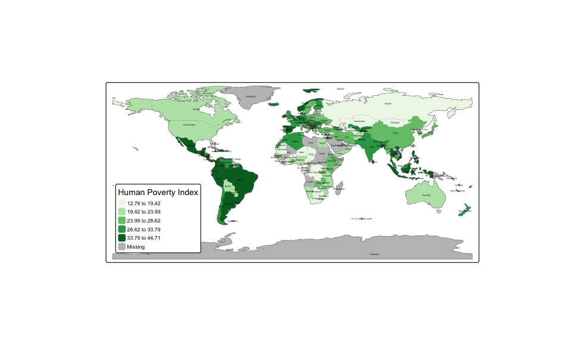

My Work
Excel
This dashboard show road accidents by different factors, like road condition, the time of the day at which the accidents took place more factors.

Geospatial
A map showing the geographical distribution of Human Poverty Index worldwide using an inbuilt world dataset in R.

Tableau
A dashboard containing information on lung cancer risk factors across various countries(25), focusing on demographic details, smoking behaviours and family history.
Visit